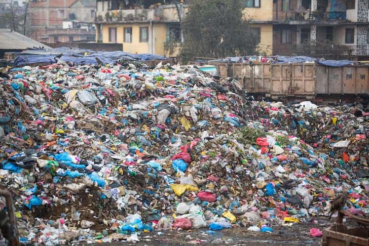
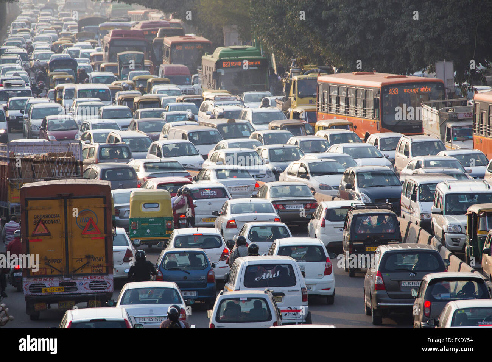

Causes of Climate Change:
1)Burning Fossil Fuels:When we use cars, buses, and factories that run on oil and gas,they make stuff called greenhouse gases. These gases stay in the air and make the Earth warmer. In short this is like weraing a thick blanket on a hot day that keeps getting thicker and makes the whole planet hotter and hotter.

2)Cutting Trees:Trees are like the Earth's air conditioners.They take in the bad stuff we create when we use cars and factories. When we cut down trees, there are fewer of these natural air conditioners,so the Earth gets even warmer.It's like turning off the air conditioner on a scorching(hot) day.

3)Using too much Electricity:When we use a lot of electricity, like for lights, computers, and TVs, we need to make more of it. Making electricity often uses things that make the Earth hotter.It's like making a lot of smoke that stays in the air and traps heat,just like the smoke from a campfire does.

4)Throwing away too much trash:When we throw away a lot of trash, especially things like plastic and food, they break down and make gases that also trap heat. It's like filling the air with a lot of stuff that makes it harder for the Earth to cool down.
5)Wasting Water:Using more water than we need, like leaving the tap on or taking long showers, needs more energy to clean and pump water. This extra energy can create more greenhouse gases that makes the Earth warmer. It's like blowing out a lot of smoke when you could just walk to the store.

6)Using Cars for Short Distances:Using cars even for short trips when we can walk or bike can make the air dirty.This dirty air can trap heat and make the Earth warmer. It's like blowing out a lot of smoke when you could just walk to the store.
7)Using Too Much Air Conditioning and Heating:Using a lot of air conditioning and heating needs a lot of energy. This energy often comes from things that make the Earth warmer. It's like using a lot of energy to make your house super cold in the summer and super warm in the winter.